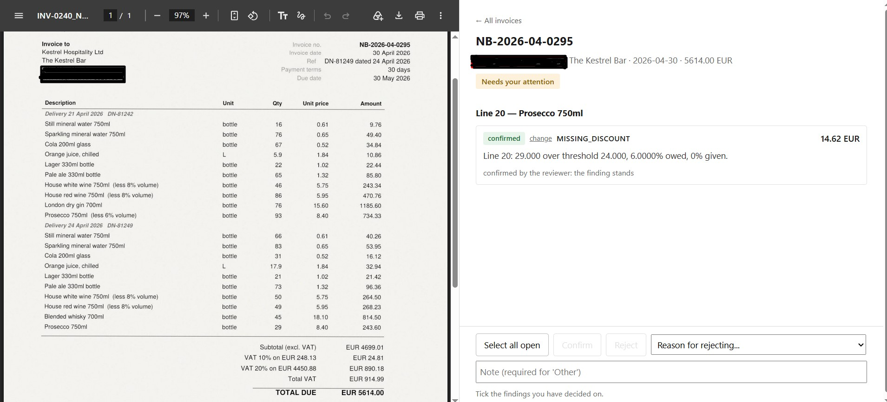
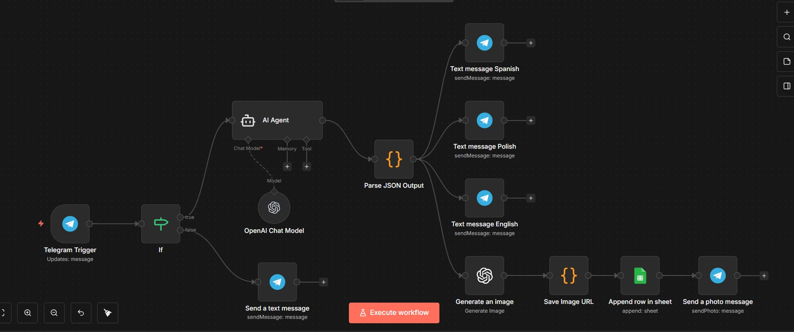
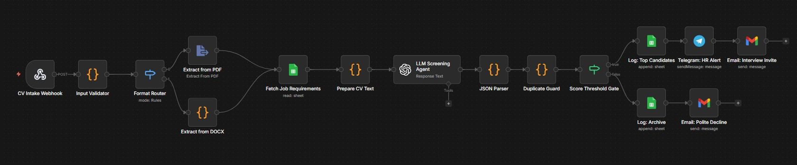
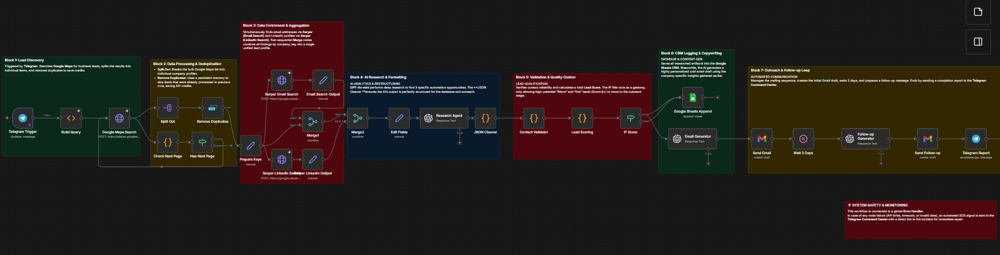

Most invoice checking systems tell you how many discrepancies they found. None tell you how many they missed — and a missed invoice leaves no trace. So this one was built backwards: first a batch of 260 invoices with 98 errors planted and recorded on purpose, then the pipeline that gets measured against that record. Extraction, arithmetic, contract pricing, reconciliation and a human review screen — with a number attached to every claim. Большинство систем проверки счетов говорят, сколько расхождений они нашли. Ни одна не говорит, сколько пропустила, — а пропущенный счёт не оставляет следов. Поэтому эта построена наоборот: сначала партия из 260 счетов с намеренно заложенными и записанными 98 ошибками, потом конвейер, который по этой записи измеряется. Извлечение, арифметика, цены по договору, сверка и экран разбора для человека — и цифра за каждым утверждением. La mayoría de los sistemas de verificación de facturas dicen cuántas discrepancias encontraron. Ninguno dice cuántas pasó por alto — y una factura omitida no deja rastro. Por eso este se construyó al revés: primero un lote de 260 facturas con 98 errores plantados y registrados a propósito, luego el pipeline que se mide contra ese registro. Extracción, aritmética, precios de contrato, conciliación y una pantalla de revisión humana — con una cifra detrás de cada afirmación. Більшість систем перевірки рахунків кажуть, скільки розбіжностей вони знайшли. Жодна не каже, скільки пропустила, — а пропущений рахунок не залишає слідів. Тому ця побудована навпаки: спершу партія з 260 рахунків із навмисно закладеними та записаними 98 помилками, потім конвеєр, який за цим записом вимірюється. Витягування, арифметика, ціни за договором, звірка та екран розбору для людини — і цифра за кожним твердженням.
The invoices are synthetic. That is what makes the number possible: with real documents nobody knows the right answer in advance — if they did, the checking would be unnecessary. Счета синтетические. Именно это и делает цифру возможной: у настоящих документов правильного ответа заранее не знает никто — если бы знал, проверка была бы не нужна. Las facturas son sintéticas. Eso es lo que hace posible la cifra: con documentos reales nadie conoce la respuesta correcta de antemano — si la conociera, la verificación sobraría. Рахунки синтетичні. Саме це й робить цифру можливою: у справжніх документів правильної відповіді заздалегідь не знає ніхто — якби знав, перевірка була б непотрібна.

A fully automated content generation system triggered by a single Telegram message. The agent takes a topic idea and produces a complete multilingual content package in seconds — no manual writing, no switching between tools, no copy-paste between languages. Полностью автоматизированная система генерации контента, запускаемая одним сообщением в Telegram. Агент берёт идею темы и за секунды создаёт полный многоязычный пакет контента — без ручного написания, без переключения между инструментами. Sistema de generación de contenido totalmente automatizado activado por un único mensaje de Telegram. El agente toma una idea de tema y produce en segundos un paquete de contenido multilingüe completo. Повністю автоматизована система генерації контенту, що запускається одним повідомленням у Telegram. Агент бере ідею теми та за секунди створює повний багатомовний пакет контенту.

A complete AI automation suite for restaurant operations — five independent agents that work together to protect reputation, fill tables, boost sales, control inventory, and create stunning food visuals. Each agent can be deployed individually or as a complete system. Полный комплекс ИИ-автоматизации для ресторанных операций — пять независимых агентов, работающих вместе для защиты репутации, заполнения столиков, увеличения продаж, контроля склада и создания визуального контента. Suite completa de automatización IA para operaciones de restaurante — cinco agentes independientes que trabajan juntos para proteger la reputación, llenar mesas, impulsar ventas, controlar inventario y crear visuales de comida. Повний комплекс ІІ-автоматизації для ресторанних операцій — п'ять незалежних агентів, що працюють разом для захисту репутації, заповнення столиків, збільшення продажів, контролю складу та створення візуального контенту.

A 3-workflow automation that turns incoming CVs into structured, ATS-ready data — intake, parsing, and handoff. It does not score, rank, or recommend candidates; hiring decisions stay with your team. Автоматизация из 3 воркфлоу, которая превращает входящие резюме в структурированные данные, готовые для ATS — приём, парсинг и передача. Не оценивает, не ранжирует и не рекомендует кандидатов; кадровые решения остаются за вашей командой. Automatización de 3 flujos que convierte los CVs entrantes en datos estructurados listos para su ATS — recepción, análisis y entrega. No puntúa, clasifica ni recomienda candidatos; las decisiones de contratación siguen siendo de su equipo. Автоматизація з 3 воркфлоу, яка перетворює вхідні резюме на структуровані дані, готові для ATS — прийом, парсинг та передача. Не оцінює, не ранжує та не рекомендує кандидатів; кадрові рішення залишаються за вашою командою.

An enterprise-grade multi-agent customer support platform scaled for small businesses. Three specialized AI agents — Legal, HR, and Customer Support — powered by Retrieval-Augmented Generation (RAG) with your company's own knowledge base. Includes intelligent routing, gap detection, and a full analytics dashboard. Мультиагентная платформа поддержки клиентов корпоративного уровня, адаптированная для малого бизнеса. Три специализированных агента — Legal, HR и Customer Support — на базе RAG с вашей корпоративной базой знаний. Plataforma multiagente de soporte al cliente de nivel empresarial adaptada para pequeñas empresas. Tres agentes especializados — Legal, HR y Soporte — con RAG sobre su base de conocimiento propia. Мультиагентна платформа підтримки клієнтів корпоративного рівня, адаптована для малого бізнесу. Три спеціалізовані агенти — Legal, HR та Customer Support — на базі RAG з вашою корпоративною базою знань.

A fully autonomous 7-block B2B lead generation and outreach machine. Triggered by a single Telegram message, it discovers businesses, enriches contact data, scores leads with AI, writes personalized cold emails, sends them, and follows up — all without human intervention. A true production-ready sales agent. Полностью автономная 7-блочная машина для генерации B2B-лидов и аутрича. Запускается одним сообщением в Telegram, находит компании, обогащает контактные данные, скорит лидов с помощью ИИ, пишет персонализированные холодные письма, отправляет их и делает фоллоу-апы. Una máquina de generación de leads B2B y outreach de 7 bloques totalmente autónoma. Activada por un mensaje de Telegram, descubre empresas, enriquece datos de contacto, puntúa leads con IA, escribe emails fríos personalizados, los envía y hace seguimiento. Повністю автономна 7-блочна машина для генерації B2B-лідів та аутрічу. Запускається одним повідомленням у Telegram, знаходить компанії, збагачує контактні дані, скорить лідів за допомогою ІІ, пише персоналізовані холодні листи, надсилає їх та робить фоллоу-апи.
Want something like this for your business? Хотите что-то подобное для вашего бизнеса? ¿Quiere algo así para su negocio? Хочете щось подібне для вашого бізнесу?
Every project started with a 30-minute conversation about the problem. Let's have yours — it's free. Каждый проект начинался с 30-минутного разговора о проблеме. Давайте начнём ваш — это бесплатно. Cada proyecto comenzó con una conversación de 30 minutos sobre el problema. Tengamos la suya — es gratuita. Кожен проект починався з 30-хвилинної розмови про проблему. Давайте почнемо вашу — це безкоштовно.